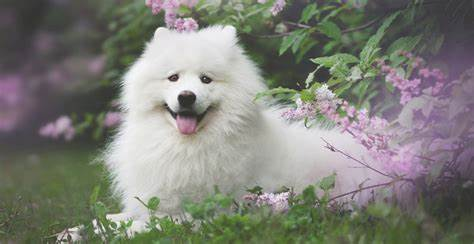
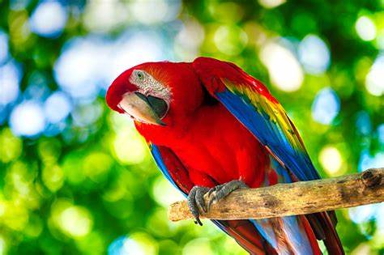
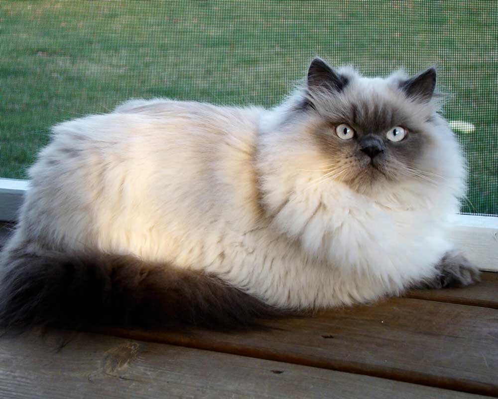
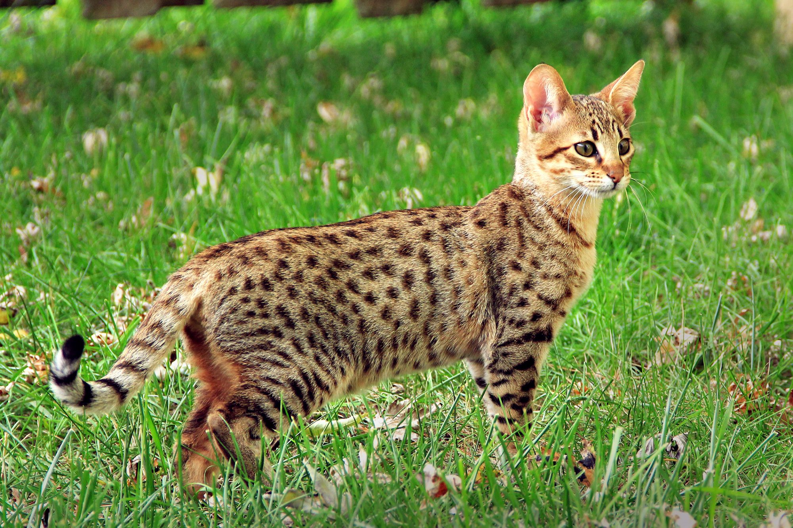

Weight [28-30 pounds]
Life Span [12 to 14 years]
Weight [35–65 pounds]
Life Span [12–14 years]
Weight [35–60 pounds]
Life Span [12–14 years]
Weight [3–7 pounds]
Life Span [12–16 years]
Weight [18–35 pounds]
Life Span [10–15 years]
| Corgi | Samoyed | Siberian Husky | Pomeranian | Beagle |
|---|---|---|---|---|
|
 | |
|
|
|
Height [10-12 inches] Weight [28-30 pounds] Life Span [12 to 14 years] |
Height [19–23.5 inches] Weight [35–65 pounds] Life Span [12–14 years] |
Height [20-22 inches] Weight [35–60 pounds] Life Span [12–14 years] |
Height [7–12 inches] Weight [3–7 pounds] Life Span [12–16 years] |
Height [13–15 inches] Weight [18–35 pounds] Life Span [10–15 years] |
| adopt | adopt | adopt | adopt | adopt |
| Cockatiels | Love Birds | Parrot |
|---|---|---|
 |
 | |
|
Height [10 inches] Weight [2-3 ounces] |
Height [5-6 inches] Weight [2 ounces] |
Height [3-36 inches] Weight [8 pounds] |
| adopt | adopt | adopt |
| Himalayan | Savannah |
|---|---|
|  |  |
|
Weight [7–14 pounds] Life Span [9-15 years] |
Weight [12-15 pounds] Life Span [12-20 years] |
| adopt | adopt |